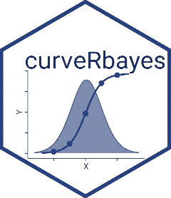

Bayesian Hierarchical Calibration with curveRbayes
From preprocessed standards to posterior concentration estimates and CDAN precision profiles
Source:vignettes/bayesian-quickstart.Rmd
bayesian-quickstart.Rmd
library(curveRcore) # preprocessing, settings, data helpers
library(curveRbayes) # this package
library(dplyr)
library(ggplot2)
library(posterior) # summarise_draws, as_draws_df
library(bayesplot) # mcmc_pairs, mcmc_nuts_treedepth
library(loo) # loo_compareEcosystem orientation
The curveR ecosystem contains three packages that share a common data contract defined by curveRcore.
curveRcore provides data structures, the
preprocessing pipeline (preprocess_standards()), and
settings constructors (new_antigen_constraints(),
new_study_params(), new_fit_options()) used
identically by both fitting engines.
curveRbayes (this package) fits Bayesian hierarchical dose–response models via Stan and produces posterior concentration estimates with full uncertainty propagation.
curveRfreq provides frequentist (NLS/NLME) alternatives for settings where speed or regulatory precedent is the primary concern; a head-to-head comparison of both engines is in the ecosystem comparison vignette.
Data and preprocessing
The raw dataset
bead_assay_example ships with curveRbayes and contains
simulated multi-plate bead-based immunoassay data for two antigens
(alpha, beta), each measured on three plates —
six curve_id values in total.
data("bead_assay_example", package = "curveRbayes")
str(bead_assay_example, max.level = 2, give.attr = FALSE)
#> List of 6
#> $ standards :'data.frame': 60 obs. of 8 variables:
#> ..$ curve_id : int [1:60] 1 1 1 1 1 1 1 1 1 1 ...
#> ..$ stype : chr [1:60] "S" "S" "S" "S" ...
#> ..$ sampleid : chr [1:60] "STD_01" "STD_02" "STD_03" "STD_04" ...
#> ..$ well : chr [1:60] "A1" "B1" "C1" "D1" ...
#> ..$ dilution : num [1:60] 1000 333.3 100 33.3 10 ...
#> ..$ mfi : num [1:60] 109 317 1133 4156 12458 ...
#> ..$ assay_response_variable : chr [1:60] "mfi" "mfi" "mfi" "mfi" ...
#> ..$ assay_independent_variable: chr [1:60] "concentration" "concentration" "concentration" "concentration" ...
#> $ blanks :'data.frame': 24 obs. of 7 variables:
#> ..$ curve_id : int [1:24] 1 1 1 1 2 2 2 2 3 3 ...
#> ..$ stype : chr [1:24] "B" "B" "B" "B" ...
#> ..$ well : chr [1:24] "G11" "H11" "G12" "H12" ...
#> ..$ dilution : int [1:24] 1 1 1 1 1 1 1 1 1 1 ...
#> ..$ mfi : num [1:24] 18.6 17.3 18.7 14.6 15.7 17.1 17.3 16.3 16.1 17.8 ...
#> ..$ assay_response_variable : chr [1:24] "mfi" "mfi" "mfi" "mfi" ...
#> ..$ assay_independent_variable: chr [1:24] "concentration" "concentration" "concentration" "concentration" ...
#> $ samples :'data.frame': 120 obs. of 13 variables:
#> ..$ curve_id : int [1:120] 1 1 1 1 1 1 1 1 1 1 ...
#> ..$ timeperiod : chr [1:120] "baseline" "baseline" "month3" "baseline" ...
#> ..$ patientid : chr [1:120] "PAT_001" "PAT_002" "PAT_003" "PAT_004" ...
#> ..$ well : chr [1:120] "A3" "B3" "C3" "D3" ...
#> ..$ stype : chr [1:120] "X" "X" "X" "X" ...
#> ..$ sampleid : chr [1:120] "a001" "a002" "a003" "a004" ...
#> ..$ agroup : chr [1:120] "GroupA" "GroupB" "GroupA" "GroupB" ...
#> ..$ dilution : int [1:120] 2000 2000 2000 2000 2000 2000 2000 2000 2000 2000 ...
#> ..$ pctaggbeads : num [1:120] 2.49 1.92 3.44 3.7 1.15 3.4 3.23 3.87 1.96 3.39 ...
#> ..$ samplingerrors : num [1:120] NA NA NA NA NA NA NA NA NA NA ...
#> ..$ mfi : num [1:120] 18323 19415 20099 19556 20178 ...
#> ..$ assay_response_variable : chr [1:120] "mfi" "mfi" "mfi" "mfi" ...
#> ..$ assay_independent_variable: chr [1:120] "concentration" "concentration" "concentration" "concentration" ...
#> $ curve_id_lookup:'data.frame': 6 obs. of 5 variables:
#> ..$ curve_id : int [1:6] 1 2 3 4 5 6
#> ..$ antigen : chr [1:6] "alpha" "alpha" "alpha" "beta" ...
#> ..$ study_accession : chr [1:6] "SDYexample" "SDYexample" "SDYexample" "SDYexample" ...
#> ..$ experiment_accession: chr [1:6] "EXPexample" "EXPexample" "EXPexample" "EXPexample" ...
#> ..$ plate : chr [1:6] "plate_1" "plate_2" "plate_3" "plate_1" ...
#> $ response_var : chr "mfi"
#> $ indep_var : chr "concentration"The key design principle is that curve_id is the
sole foreign key uniquely identifying one calibration curve —
encoding antigen, study, experiment, and plate together.
curve_id_lookup decodes it for human-readable labels, but
all fitting, filtering, and indexing uses the integer
curve_id alone.
bead_assay_example$curve_id_lookup
#> curve_id antigen study_accession experiment_accession plate
#> 1 1 alpha SDYexample EXPexample plate_1
#> 2 2 alpha SDYexample EXPexample plate_2
#> 3 3 alpha SDYexample EXPexample plate_3
#> 4 4 beta SDYexample EXPexample plate_1
#> 5 5 beta SDYexample EXPexample plate_2
#> 6 6 beta SDYexample EXPexample plate_3The raw $standards data frame carries
dilution and mfi. Neither a
concentration column nor log-transformed responses exist
yet — those are created by preprocessing.
head(bead_assay_example$standards, 4)
#> curve_id stype sampleid well dilution mfi assay_response_variable
#> 1 1 S STD_01 A1 1000.00000 109.4 mfi
#> 2 1 S STD_02 B1 333.33333 316.9 mfi
#> 3 1 S STD_03 C1 100.00000 1133.0 mfi
#> 4 1 S STD_04 D1 33.33333 4156.1 mfi
#> assay_independent_variable
#> 1 concentration
#> 2 concentration
#> 3 concentration
#> 4 concentrationPreprocessing with curveRcore
preprocess_standards() applies four steps in a fixed
canonical order, identically for both curveRbayes and curveRfreq:
-
Concentration computation —
(1 / dilution) × std_curve_conc, written into theconcentrationcolumn, optionally log10-transformed. - Prozone correction — compresses post-peak hook-effect deflections.
-
Blank handling — one of five strategies;
"ignored"is the default. -
Response log-transform —
log10(mfi), non-positive values floored adaptively before transformation.
After preprocessing, concentration holds
log10(AU/mL) and mfi holds
log10(MFI) — the exact values Stan receives, as
confirmed by build_stan_data() which pulls
standards$concentration and
standards[[response_variable]] directly.
# CONC in bead_assay_example runs 0.001–30 AU/mL; dilution = 1/CONC,
# so std_curve_conc = 1/min(dilution) = max(CONC) = 30.
antigen_settings <- new_antigen_constraints(
antigen = "alpha",
std_curve_conc = 30,
l_asy_method = "default",
pcov_threshold = 20
)
study_params <- new_study_params(
is_log_response = TRUE,
is_log_independent = TRUE,
apply_prozone = TRUE,
blank_option = "ignored"
)
# Preprocess all six curve_ids (both antigens, all plates)
prep <- preprocess_standards(
data = bead_assay_example$standards,
antigen_settings = antigen_settings,
response_variable = bead_assay_example$response_var,
independent_variable = bead_assay_example$indep_var,
is_log_response = study_params$is_log_response,
blank_data = bead_assay_example$blanks,
blank_option = study_params$blank_option,
is_log_independent = study_params$is_log_independent,
apply_prozone = study_params$apply_prozone
)
standards_preprocessed <- prep$data
# After preprocessing: concentration = log10(AU/mL), mfi = log10(MFI)
head(standards_preprocessed[, c("curve_id", "dilution",
"concentration", "mfi")], 4)
#> curve_id dilution concentration mfi
#> 1 1 1000.00000 -1.52287875 2.039017
#> 2 1 333.33333 -1.04575749 2.500922
#> 3 1 100.00000 -0.52287875 3.054230
#> 4 1 33.33333 -0.04575749 3.618686{r plot-preprocessed, fig.cap="Preprocessed calibration standards for antigen alpha (curve_id 1–3). Both axes are log10-transformed — these are the exact values passed to Stan. Each curve_id is one plate; inter-plate differences in MFI level and curve shape are the variability the hierarchical model handles."} standards_preprocessed |> dplyr::filter(curve_id %in% 1:3) |> ggplot(aes(x = concentration, y = mfi, colour = factor(curve_id), group = curve_id)) + geom_point(size = 2.5, alpha = 0.85) + geom_line(linewidth = 0.5, linetype = "dashed") + scale_colour_brewer(palette = "Set1") + labs( x = "log\u2081\u2080(concentration) [AU/mL]", y = "log\u2081\u2080(MFI)", colour = "curve_id", title = "Preprocessed standards — antigen alpha" ) + theme_minimal(base_size = 12) + theme(legend.position = "bottom")
The three curves share the same biological dose–response but differ in their absolute MFI offset and inflection point position — precisely the inter-plate variability a hierarchical model is designed to handle.
Fitting the model: fit_calibration_bayes()
Argument reference
fit_calibration_bayes() receives already-preprocessed
standards and fits all curve_id values simultaneously via
hierarchical Stan models.
| Argument | Default | Purpose |
|---|---|---|
| standards | — | Data frame. Preprocessed stacked standards with curve_id, concentration, and response column — all on the fitting scale. Output of preprocess_standards()$data. |
| samples | NULL | Data frame or NULL. Stacked sample data with curve_id and response column on the raw measurement scale. |
| response_var | — | Character. Name of the response column (e.g. ‘mfi’). |
| model_names | c(‘logistic4’, ‘gompertz4’) | Character vector. Model families to fit. loglogistic4 is automatically dropped when is_log_independent = TRUE. |
| is_log_response | TRUE | Logical. Whether the response column is already log10-transformed. |
| is_log_independent | TRUE | Logical. Whether the concentration column is already log10-transformed. |
| std_curve_conc | — | Numeric. Undiluted standard concentration used to build the prediction grid. |
| fixed_a | NULL | Numeric or NULL. If non-NULL, a soft Normal prior is placed on the population mean of log(A) centred here. NULL = data-adaptive only. |
| cv_x_max | 150 | Numeric. Hard cap for pcov / pcov_rmse (prevents infinite CV at asymptotes). |
| pcov_threshold | 20 | Numeric. Percent CV threshold for LLOQ/ULOQ determination and the dynamic-range eligibility gate. |
| min_dynamic_range_log10 | 0.5 | Numeric. Minimum log10 dynamic range (upper – lower asymptote) for eligibility. |
| max_rel_se | 5.0 | Numeric. Maximum posterior SD / |mean| permitted for any per-curve parameter. |
| n_grid | 200L | Integer. Number of concentration points in the CDAN precision grid. |
| grid_min_conc | 1e-4 | Numeric. Lower bound of the prediction grid on the raw concentration scale. |
| grid_max_conc | NULL | Numeric or NULL. Upper bound of the grid. NULL uses std_curve_conc. |
| chains | 4L | Integer. Number of independent Markov chains. |
| warmup | 1000L | Integer. Warm-up iterations discarded before inference. |
| sampling | 1000L | Integer. Post-warmup sampling iterations used for inference. |
| adapt_delta | 0.9 | Numeric. Stan adapt_delta. Increase toward 0.99 if divergences appear. |
| seed | NULL | Integer or NULL. RNG seed passed to Stan for reproducibility. |
| n_draws_predict | 500L | Integer. Posterior draws for best-model CDAN grid and sample predictions. |
| n_draws_ensemble | 260L | Integer. Posterior draws for non-best-model CDAN grids. |
| compute_all_grids | FALSE | Logical. Forced TRUE automatically when > 1 model is fitted (required for eligibility gating). |
| run_loo | NULL | Logical or NULL. NULL = auto (TRUE when > 1 model). Run PSIS-LOO after fitting. |
| verbose | FALSE | Logical. Emit progress messages. |
Running the fit
fit_calibration_bayes() receives the
already-preprocessed standards data frame from Section
@ref(preprocessing). Preprocessing is always the caller’s responsibility
— the function does not accept the raw data list.
fit <- fit_calibration_bayes(
standards = standards_preprocessed,
samples = bead_assay_example$samples,
response_var = bead_assay_example$response_var, # "mfi"
model_names = c("logistic4", "logistic5",
"gompertz4", "loglogistic5"),
is_log_response = study_params$is_log_response,
is_log_independent = study_params$is_log_independent,
std_curve_conc = antigen_settings$standard_curve_concentration,
fixed_a = NULL,
n_grid = 200L,
grid_min_conc = 1e-4,
chains = 4L,
warmup = 1000L,
sampling = 1000L,
adapt_delta = 0.95,
seed = 42,
run_loo = TRUE,
verbose = TRUE
)
#> [fit_calibration_bayes] compute_all_grids forced TRUE for eligibility gating across 4 models
#>
#> ── Fitting logistic4 ──
#> [fit_bayes] Sampling logistic4 (4 chains × 1000 draws) ...
#> Chain 1 Rejecting initial value:
#> Chain 1 Gradient evaluated at the initial value is not finite.
#> Chain 1 Stan can't start sampling from this initial value.
#> Chain 1 Rejecting initial value:
#> Chain 1 Gradient evaluated at the initial value is not finite.
#> Chain 1 Stan can't start sampling from this initial value.
#> Chain 4 Rejecting initial value:
#> Chain 4 Gradient evaluated at the initial value is not finite.
#> Chain 4 Stan can't start sampling from this initial value.
#> [fit_bayes] Done. Divergences: 0 Max treedepth: 0
#>
#> ── Fitting logistic5 ──
#> [fit_bayes] Sampling logistic5 (4 chains × 1000 draws) ...
#> Chain 1 Rejecting initial value:
#> Chain 1 Gradient evaluated at the initial value is not finite.
#> Chain 1 Stan can't start sampling from this initial value.
#> Chain 3 Informational Message: The current Metropolis proposal is about to be rejected because of the following issue:
#> Chain 3 Exception: student_t_lpdf: Scale parameter is inf, but must be positive finite! (in 'C:/Users/d78039e/AppData/Local/Temp/RtmpWmeqzM/model-25f857575239.stan', line 114, column 4 to column 42)
#> Chain 3 If this warning occurs sporadically, such as for highly constrained variable types like covariance matrices, then the sampler is fine,
#> Chain 3 but if this warning occurs often then your model may be either severely ill-conditioned or misspecified.
#> Chain 3
#> Chain 4 Rejecting initial value:
#> Chain 4 Gradient evaluated at the initial value is not finite.
#> Chain 4 Stan can't start sampling from this initial value.
#> Chain 4 Informational Message: The current Metropolis proposal is about to be rejected because of the following issue:
#> Chain 4 Exception: student_t_lpdf: Scale parameter is 0, but must be positive finite! (in 'C:/Users/d78039e/AppData/Local/Temp/RtmpWmeqzM/model-25f857575239.stan', line 114, column 4 to column 42)
#> Chain 4 If this warning occurs sporadically, such as for highly constrained variable types like covariance matrices, then the sampler is fine,
#> Chain 4 but if this warning occurs often then your model may be either severely ill-conditioned or misspecified.
#> Chain 4
#> [fit_bayes] Done. Divergences: 0 Max treedepth: 0
#>
#> ── Fitting gompertz4 ──
#> [fit_bayes] Sampling gompertz4 (4 chains × 1000 draws) ...
#> Chain 1 Rejecting initial value:
#> Chain 1 Gradient evaluated at the initial value is not finite.
#> Chain 1 Stan can't start sampling from this initial value.
#> Chain 1 Rejecting initial value:
#> Chain 1 Gradient evaluated at the initial value is not finite.
#> Chain 1 Stan can't start sampling from this initial value.
#> Chain 1 Informational Message: The current Metropolis proposal is about to be rejected because of the following issue:
#> Chain 1 Exception: student_t_lpdf: Scale parameter is inf, but must be positive finite! (in 'C:/Users/d78039e/AppData/Local/Temp/RtmpWmeqzM/model-25f810ca1129.stan', line 87, column 4 to column 42)
#> Chain 1 If this warning occurs sporadically, such as for highly constrained variable types like covariance matrices, then the sampler is fine,
#> Chain 1 but if this warning occurs often then your model may be either severely ill-conditioned or misspecified.
#> Chain 1
#> Chain 4 Informational Message: The current Metropolis proposal is about to be rejected because of the following issue:
#> Chain 4 Exception: student_t_lpdf: Scale parameter is inf, but must be positive finite! (in 'C:/Users/d78039e/AppData/Local/Temp/RtmpWmeqzM/model-25f810ca1129.stan', line 87, column 4 to column 42)
#> Chain 4 If this warning occurs sporadically, such as for highly constrained variable types like covariance matrices, then the sampler is fine,
#> Chain 4 but if this warning occurs often then your model may be either severely ill-conditioned or misspecified.
#> Chain 4
#> [fit_bayes] Done. Divergences: 0 Max treedepth: 0
#>
#> ── Fitting loglogistic5 ──
#> [fit_bayes] Sampling loglogistic5 (4 chains × 1000 draws) ...
#> Chain 1 Informational Message: The current Metropolis proposal is about to be rejected because of the following issue:
#> Chain 1 Exception: student_t_lpdf: Location parameter is nan, but must be finite! (in 'C:/Users/d78039e/AppData/Local/Temp/RtmpWmeqzM/model-25f8ea6153.stan', line 98, column 4 to column 42)
#> Chain 1 If this warning occurs sporadically, such as for highly constrained variable types like covariance matrices, then the sampler is fine,
#> Chain 1 but if this warning occurs often then your model may be either severely ill-conditioned or misspecified.
#> Chain 1
#> Chain 3 Informational Message: The current Metropolis proposal is about to be rejected because of the following issue:
#> Chain 3 Exception: student_t_lpdf: Scale parameter is inf, but must be positive finite! (in 'C:/Users/d78039e/AppData/Local/Temp/RtmpWmeqzM/model-25f8ea6153.stan', line 98, column 4 to column 42)
#> Chain 3 If this warning occurs sporadically, such as for highly constrained variable types like covariance matrices, then the sampler is fine,
#> Chain 3 but if this warning occurs often then your model may be either severely ill-conditioned or misspecified.
#> Chain 3
#> [fit_bayes] Done. Divergences: 0 Max treedepth: 0
#> [grids] logistic4 (260 draws)
#> [grids] logistic5 (260 draws)
#> [grids] gompertz4 (260 draws)
#> [grids] loglogistic5 (260 draws)
#> [eligibility] logistic4 ✓ eligible
#> [eligibility] logistic5 ✓ eligible
#> [eligibility] gompertz4 ✓ eligible
#> [eligibility] loglogistic5 ✓ eligible
#> [selection] best = logistic5
#> [detection_limits] curve_id=1 LLOD_resp=1.704 ULOD_resp=4.281 MDC=[-2.055, 1.254] RDL=[-2.039, 0.9247]
#> [detection_limits] curve_id=2 LLOD_resp=1.561 ULOD_resp=4.256 MDC=[-2.166, 1.315] RDL=[-2.152, 0.9565]
#> [detection_limits] curve_id=3 LLOD_resp=1.665 ULOD_resp=4.303 MDC=[-2.13, 1.242] RDL=[-2.116, 0.9022]
#> [detection_limits] curve_id=4 LLOD_resp=1.401 ULOD_resp=4.412 MDC=[-0.7033, 2.27] RDL=[-0.6938, 1.972]
#> [detection_limits] curve_id=5 LLOD_resp=1.349 ULOD_resp=4.379 MDC=[-0.7132, 2.345] RDL=[-0.7042, 2.011]
#> [detection_limits] curve_id=6 LLOD_resp=1.462 ULOD_resp=4.398 MDC=[-0.4906, 2.261] RDL=[-0.4805, 1.954]
# ── Unpack convenience references from the multiplate structure ──
# Top-level: $meta (global metadata) and $plates (per-curve results)
cat("Top-level slots:", paste(names(fit), collapse = ", "), "\n")
#> Top-level slots: meta, plates
cat("Curve IDs fitted:", paste(names(fit$plates), collapse = ", "), "\n")
#> Curve IDs fitted: 1, 2, 3, 4, 5, 6
cat("Best model:", fit$meta$best_model, "\n")
#> Best model: logistic5
# Per-curve plate for single-curve demonstrations — use curve_id "1"
cr1 <- fit$plates[["1"]]
# The per-curve ensemble: one entry per fitted model family.
# Each entry: $model_name, $converged, $parameters, $fit_stats,
# $raw_fit (full bayes_fit object), $eligibility, $grid
ensemble <- cr1$ensemble
cat("Models in ensemble:", paste(names(ensemble), collapse = ", "), "\n")
#> Models in ensemble: logistic4, logistic5, gompertz4, loglogistic5
# CmdStanMCMC fit and posterior draws for logistic4, curve_id 1
cmdstan_fit_4pl <- cr1$ensemble[["logistic4"]]$raw_fit$fit
draws_4pl <- posterior::as_draws_df(cmdstan_fit_4pl$draws())
# LOO comparison and stacking weights from the global selection metadata
loo_comparison <- fit$meta$selection$loo_comparison
stacking_weights <- fit$meta$selection$loo_weights
if (!is.null(stacking_weights) && is.null(names(stacking_weights)))
names(stacking_weights) <- names(ensemble)
# Compute per-model loo objects for Pareto-k diagnostics
loo_list <- lapply(ensemble, function(m) {
if (!is.null(m$raw_fit)) compute_loo(m$raw_fit) else NULL
})
# Assemble the flat eligibility data frame across all plates and models
eligibility <- do.call(rbind, lapply(names(fit$plates), function(cid) {
cr <- fit$plates[[cid]]
do.call(rbind, lapply(names(cr$ensemble), function(fam) {
elig <- cr$ensemble[[fam]]$eligibility
if (is.null(elig) || is.null(elig$gates)) return(NULL)
gates_df <- elig$gates
gates_df$model <- fam
gates_df$curve_id <- as.integer(cid)
gates_df$eligible <- elig$eligible
gates_df
}))
}))The calibration_result_multiplate output structure
fit_calibration_bayes() returns a single S3 object of
class calibration_result_multiplate (defined in
curveRcore).
The object has two top-level slots.
$meta holds global information about
the run:
| fit$meta slot | Type | Contents |
|---|---|---|
| method | character | ‘bayesian’ |
| package | character | ‘curveRbayes’ |
| curve_ids | vector | All curve_id values that were fitted. |
| n_curves | integer | Number of curve_ids. |
| response_var | character | Name of the response column. |
| is_log_response | logical | Whether response is log10-transformed. |
| is_log_independent | logical | Whether concentration is log10-transformed. |
| best_model | character | Name of the selected best model after LOO + eligibility. |
| selection | list | Full eligible-selection object: best_model_name, criterion, assessments, eligible_models, fallback, loo_comparison, loo_weights. |
| compute_all_grids | logical | Whether CDAN grids were computed for all models. |
| pcov_threshold | numeric | Percent CV threshold used for LLOQ/ULOQ. |
| timestamp | POSIXct | Wall time at which the function returned. |
$plates is a named list with one entry
per curve_id. Each entry is a
calibration_result with the following slots:
| fit$plates[[“k”]] slot | Type | Contents |
|---|---|---|
| meta | list | Per-curve metadata: method, curve_id, n_standards, n_samples, chains, warmup, sampling, adapt_delta, seed, n_draws_predict, n_draws_ensemble, pcov_threshold, etc. |
| ensemble | named list | One entry per fitted model family (see below). |
| selection | list | Eligible-selection result for this plate: best_model_name, criterion, assessments_by_curve, fallback. |
| grid | data frame | CDAN precision grid for the selected best model at this curve_id. Columns: x_fit, predicted_response, ci_lower, ci_upper, predicted_concentration, se_concentration, pcov, pcov_rmse, pcov_pass, d2y_dx2. |
| samples | data frame | Back-calculated test samples for this curve_id, or NULL. |
Each ensemble[[model_name]] entry contains:
| ensemble[[m]] slot | Type | Contents |
|---|---|---|
| model_name | character | Model family identifier. |
| converged | logical | TRUE (all Bayesian fits are considered converged; check diagnostics manually). |
| parameters | data frame | Per-curve posterior summaries: term, mean, sd, q2.5, q50, q97.5. |
| fit_stats | list | NUTS diagnostics: n_divergent, n_max_treedepth, ebfmi. |
| raw_fit | list | Full fit_bayes_single() output: $fit (CmdStanMCMC), $draws (draws_df), $stan_data, $model_family. |
| eligibility | list | assess_model_eligibility() result: eligible (logical), gates (data frame), dynamic_range_log10, lloq, uloq. |
| grid | data frame | Per-model CDAN grid at this curve_id (populated for all models when compute_all_grids = TRUE). |
Common navigation patterns
# 1. Quick convergence summary across all models (curve_id 1)
lapply(ensemble, function(m) {
fs <- m$fit_stats
tibble::tibble(
n_divergent = fs$n_divergent,
n_max_treedepth = fs$n_max_treedepth,
mean_ebfmi = round(mean(fs$ebfmi, na.rm = TRUE), 3)
)
}) |>
dplyr::bind_rows(.id = "model") |>
knitr::kable(digits = 3, caption = "Quick convergence summary — curve_id 1.")| model | n_divergent | n_max_treedepth | mean_ebfmi |
|---|---|---|---|
| logistic4 | 0 | 0 | 0.681 |
| logistic5 | 0 | 0 | 0.698 |
| gompertz4 | 0 | 0 | 0.678 |
| loglogistic5 | 0 | 0 | 0.670 |
# 2. Population inflection point: posterior mean and 95% CI
mu_c_draws <- as.numeric(draws_4pl[["mu_c"]])
cat(sprintf(
"mu_c: mean = %.3f 95%% CI [%.3f, %.3f] (log10 AU/mL)\n",
mean(mu_c_draws),
quantile(mu_c_draws, 0.025),
quantile(mu_c_draws, 0.975)
))
#> mu_c: mean = 0.057 95% CI [-0.622, 0.827] (log10 AU/mL)
# 3. Formal LOO comparison (if more than one model was fitted)
if (!is.null(loo_comparison)) print(loo_comparison)
#> model elpd_diff se_diff p_worse diag_diff diag_elpd
#> logistic5 0.0 0.0 NA 1 k_psis > 0.7
#> loglogistic5 -0.8 0.9 0.83 N < 100 2 k_psis > 0.7
#> logistic4 -6.1 2.3 1.00 N < 100 4 k_psis > 0.7
#> gompertz4 -14.9 6.2 0.99 N < 100 5 k_psis > 0.7
#>
#> Diagnostic flags present.
#> See ?`loo-glossary` (sections `diag_diff` and `diag_elpd`)
#> or https://mc-stan.org/loo/reference/loo-glossary.html.
# 4. Access CDAN grid for the best model at curve_id 1
grid_best <- cr1$grid
head(grid_best[, c("x_fit", "predicted_response",
"pcov", "pcov_rmse", "pcov_pass")])
#> x_fit predicted_response pcov pcov_rmse pcov_pass
#> 1 -4.000000 1.391426 150 150 FALSE
#> 2 -3.972477 1.393164 150 150 FALSE
#> 3 -3.944954 1.394949 150 150 FALSE
#> 4 -3.917430 1.396783 150 150 FALSE
#> 5 -3.889907 1.398665 150 150 FALSE
#> 6 -3.862384 1.400599 150 150 FALSE
# 5. Access per-model grid for logistic4 specifically
grid_4pl <- ensemble[["logistic4"]]$grid
head(grid_4pl[, c("x_fit", "predicted_response", "pcov")])
#> x_fit predicted_response pcov
#> 1 -4.000000 1.651680 146.7610
#> 2 -3.972477 1.651920 140.8594
#> 3 -3.944954 1.652173 150.0000
#> 4 -3.917430 1.652439 150.0000
#> 5 -3.889907 1.652718 150.0000
#> 6 -3.862384 1.653011 140.4943The hierarchical Stan model
Why hierarchical?
A pooled model treats all plates as a single experiment, conflating within-plate and between-plate variance and producing overconfident predictions. A separate-plate model fits each plate independently, discarding the shared biology and producing underconfident estimates when any single plate has few calibrators. The Bayesian hierarchical model occupies the optimal middle ground: plate-level parameters are exchangeable draws from a common population distribution, sharing information across plates while still adapting to each plate’s data.
Parameter structure
All model families share the same hierarchical skeleton. Using the
4PL logistic (logistic4) as the reference:
where
indexes curve_id,
is the log10-concentration of standard
(the concentration column after preprocessing), and
is observation noise.
| Parameter | Meaning | Hierarchy level |
|---|---|---|
| Lower asymptote (background) | Per-curve_id
|
|
| Hill slope | Per-curve_id
|
|
| Inflection point (log10-EC50) | Per-curve_id
|
|
| Upper asymptote | Per-curve_id
|
|
| … | Population mean and SD for each parameter | Global |
| Observation noise SD and Student-t d.f. | Global (pooled) |
logistic5 and loglogistic5 add a
per-curve_id asymmetry parameter
with its own population mean and SD. gompertz4 replaces the
logistic link with a Gompertz function but keeps the same four-parameter
hierarchy.
On the log–log scale (is_log_independent = TRUE,
is_log_response = TRUE), loglogistic4 is
mathematically equivalent to logistic4.
fit_calibration_bayes() therefore automatically drops
loglogistic4 from the candidate set when both
transformations are active.
The Stan models shipped with curveRbayes
Five Stan model files live in inst/stan/. Each
implements the same three-part structure:
| File | Family | Notes |
|---|---|---|
hierarchical_logistic4.stan |
4PL logistic | Reference model |
hierarchical_logistic5.stan |
5PL logistic | Adds asymmetry parameter |
hierarchical_loglogistic4.stan |
4PL log-logistic | Dropped automatically when both axes are log-transformed |
hierarchical_loglogistic5.stan |
5PL log-logistic | |
hierarchical_gompertz4.stan |
Gompertz | Replaces logistic link |
Paths are resolved by stan_model_path() and models are
compiled (and cached) once per session by
compile_stan_model().
Non-centred parameterisation
The centred parameterisation creates a funnel geometry: when is small the sampler must simultaneously explore a tight neck and wide wings, producing divergent transitions. curveRbayes uses the non-centred parameterisation (NCP) throughout:
The sampler explores the standardised offset — which always has flat geometry — and the global hyperparameters independently. Only at the likelihood evaluation are they recombined into . This transformation eliminates the funnel and is the primary reason Stan achieves near-zero divergences on these models.
The parameters and transformed parameters
blocks for logistic4 illustrate the pattern:
parameters {
// population hyperparameters (on log scale for positive quantities)
real mu_log_b;
real mu_c; // inflection on the fitting scale
real mu_log_d;
real mu_a; // lower asymptote (fitting scale)
// population SDs — Half-Normal keeps these positive
real<lower=0> sigma_a;
real<lower=0> sigma_log_b;
real<lower=0> sigma_c;
real<lower=0> sigma_log_d;
// non-centred offsets: one per curve_id
vector[N_plates] z_a;
vector[N_plates] z_b;
vector[N_plates] z_c;
vector[N_plates] z_d;
// observation noise (pooled across all curve_ids)
real<lower=0> sigma_obs;
real<lower=1> nu;
}
transformed parameters {
// plate-level parameters reconstructed from NCP offsets
vector[N_plates] a = mu_a + sigma_a * z_a;
vector[N_plates] b = exp(mu_log_b + sigma_log_b * z_b);
vector[N_plates] c_par = mu_c + sigma_c * z_c;
vector[N_plates] d = exp(mu_log_d + sigma_log_d * z_d);
}Note that b and d are exponentiated so they
remain strictly positive. The inflection point c_par and
lower asymptote a are left on the fitting scale (already
log10 after preprocessing).
The reduce_sum likelihood
The likelihood loop is parallelised via Stan’s
reduce_sum map-reduce construct, controlled by the
grainsize argument of build_stan_data()
(default 1L, which lets Stan choose the grain
automatically). With CmdStan’s threading backend this provides
near-linear speedup with the number of CPU cores for large datasets.
Data-adaptive priors and fixed_a
Data-adaptive prior construction
When fixed_a = NULL (the default), curveRbayes
constructs weakly-informative priors anchored to the observed data range
via compute_dynamic_priors().
build_stan_data() assembles these as named scalar fields in
the Stan data list — prior_a_mu,
prior_a_sigma, prior_d_mu,
prior_d_sigma, prior_log_b_mu,
prior_log_b_sigma, and either prior_c_mu /
prior_c_sigma (all families except
loglogistic4) or prior_log_c_mu /
prior_log_c_sigma (for loglogistic4).
Five-parameter families additionally receive prior_log_g_sd
and prior_log_g_plate_sd.
| Parameter | Population mean prior | Rationale |
|---|---|---|
| a (lower asymptote) | Normal(y_min, 0.3 × y_range) | Centred on observed minimum; broadly permissive. |
| log(b) (Hill slope) | Normal(0, 0.7) | Prior median slope = 1.0; log-scale keeps b > 0. |
| c (inflection) | Normal(x_mid, 0.5 × x_range) | Centred on geometric midpoint of concentration range. |
| log(d) (upper asy.) | Normal(y_max + 0.1 × y_range, 0.3 × y_range) | Slightly above observed maximum. |
| sigma_obs | Half-Normal(0, 0.1 × y_range) | Noise scaled to signal range. |
| log(g) (asymmetry) | Normal(0, 0.5) / Normal(0, 0.3) | 5-parameter only. g = 1 recovers the 4PL; regularised toward symmetry. |
You can inspect the actual prior values that were passed to Stan:
# compute_dynamic_priors() is called internally; call it directly to inspect
priors <- compute_dynamic_priors(
data = standards_preprocessed,
response_variable = bead_assay_example$response_var,
model_family = "logistic4"
)
str(priors)
#> List of 8
#> $ prior_a_mu : num 1.27
#> $ prior_a_sigma : num 0.964
#> $ prior_d_mu : num 4.8
#> $ prior_d_sigma : num 0.964
#> $ prior_log_b_mu : num 0
#> $ prior_log_b_sigma: num 0.7
#> $ prior_c_mu : num 0.716
#> $ prior_c_sigma : num 2.24The fixed_a soft constraint
The lower asymptote (background signal) can be poorly identified when the lowest calibrator is not far above background, or when background varies substantially across plates. In those situations the posterior of spreads into implausibly low territory, pulling the other parameters through their posterior correlations.
fixed_a places an informative Normal
prior on the population mean of
(on the fitting scale):
The SD is deliberately narrow — roughly 1% of the signal range — to
prevent extreme exploration while still permitting genuine
plate-to-plate variation. This is a soft constraint: strongly
informative data can still move
away from fixed_a.
# blank wells for antigen alpha have MFI ≈ 18 (on the raw scale);
# after log10-transform, fixed_a should be log10(18) ≈ 1.255.
fit_fixed_a <- fit_calibration_bayes(
standards = standards_preprocessed,
response_var = bead_assay_example$response_var,
model_names = "logistic4",
is_log_response = TRUE,
is_log_independent = TRUE,
std_curve_conc = antigen_settings$standard_curve_concentration,
fixed_a = log10(18),
chains = 4L,
warmup = 1000L,
sampling = 1000L,
seed = 42
)When to use fixed_a:
- Fewer than ~6 calibrators and the lowest point is close to background.
- Strong prior knowledge of background from blank wells or historical runs.
- Posterior of is multimodal or has very wide credible intervals.
When to leave it NULL:
- The assay spans ≥ 3 log-decades with a clear low-end plateau.
- Background is highly variable and you want the model to learn it.
MCMC diagnostics
Bayesian inference is only as trustworthy as the quality of the MCMC
approximation. curveRbayes surfaces three NUTS-specific diagnostic
classes that together constitute a minimum due-diligence checklist. All
three are stored in ensemble[[model]]$fit_stats.
Accessing diagnostics
# Per-model convergence diagnostics from fit_stats
lapply(ensemble, function(m) {
fs <- m$fit_stats
tibble::tibble(
n_divergent = fs$n_divergent,
n_max_treedepth = fs$n_max_treedepth,
mean_ebfmi = round(mean(fs$ebfmi, na.rm = TRUE), 3)
)
}) |>
dplyr::bind_rows(.id = "model") |>
knitr::kable(digits = 3, caption = "Convergence flag summary — curve_id 1.")| model | n_divergent | n_max_treedepth | mean_ebfmi |
|---|---|---|---|
| logistic4 | 0 | 0 | 0.681 |
| logistic5 | 0 | 0 | 0.698 |
| gompertz4 | 0 | 0 | 0.678 |
| loglogistic5 | 0 | 0 | 0.670 |
# Population-level Rhat and ESS for logistic4
posterior::summarise_draws(
draws_4pl,
mean, sd,
~posterior::quantile2(.x, probs = c(0.025, 0.975)),
posterior::default_convergence_measures()
) |>
dplyr::filter(grepl("^mu_|^sigma_obs|^nu$", variable)) |>
knitr::kable(digits = 3,
caption = "Population-level parameter summary — logistic4. Rhat < 1.01 and ess_bulk > 400 indicate adequate convergence.")| variable | mean | sd | q2.5 | q97.5 | rhat | ess_bulk | ess_tail |
|---|---|---|---|---|---|---|---|
| mu_a | 1.440 | 0.137 | 1.215 | 1.733 | 1.004 | 946.535 | 2093.393 |
| mu_d | 4.403 | 0.051 | 4.306 | 4.502 | 1.002 | 1675.909 | 2033.096 |
| mu_log_b | -0.754 | 0.091 | -0.896 | -0.538 | 1.001 | 1542.517 | 1803.016 |
| mu_c | 0.057 | 0.359 | -0.622 | 0.827 | 1.002 | 1503.727 | 1999.230 |
| sigma_obs | 0.059 | 0.011 | 0.039 | 0.081 | 1.001 | 1308.624 | 2465.664 |
| nu | 12.815 | 11.065 | 2.531 | 44.091 | 0.999 | 2143.685 | 2421.404 |
Divergent transitions
A divergent transition occurs when the leapfrog integrator takes a discrete step that departs exponentially from the true Hamiltonian. Divergences cluster in high-curvature regions of the posterior — most often the neck of a funnel — and indicate that some part of the geometry is not being explored correctly.
| Divergence count | Interpretation and action |
|---|---|
| 0 | ✅ Proceed. |
| 1–10 | ⚠️ Increase adapt_delta (e.g. 0.97 → 0.99). Inspect
pairs plots. |
| > 10 | 🚫 Do not use posterior. Likely model or prior misspecification. |
lapply(ensemble, function(m) {
data.frame(n_divergences = m$fit_stats$n_divergent %||% NA_integer_)
}) |>
dplyr::bind_rows(.id = "model") |>
knitr::kable(caption = "Divergent transitions per model.")| model | n_divergences |
|---|---|
| logistic4 | 0 |
| logistic5 | 0 |
| gompertz4 | 0 |
| loglogistic5 | 0 |
{r pairs-plot, fig.cap="Pairs plot for logistic4 population parameters. Divergent transitions are highlighted in red. Absence of red points in funnel-shaped regions confirms the non-centred parameterisation is working correctly."} bayesplot::mcmc_pairs( posterior::as_draws_array(cmdstan_fit_4pl$draws()), pars = c("mu_a", "mu_c", "mu_log_d", "sigma_c"), off_diag_args = list(size = 0.3, alpha = 0.3), np = bayesplot::nuts_params(cmdstan_fit_4pl) )
E-BFMI
The Energy Bayesian Fraction of Missing Information (E-BFMI) measures how efficiently the sampler traverses the energy distribution. Values below 0.2 indicate the sampler is trapped in a local region and cannot explore the full posterior geometry.
lapply(ensemble, function(m) {
ebfmi <- m$fit_stats$ebfmi
if (is.null(ebfmi)) return(data.frame(mean_ebfmi = NA_real_))
data.frame(mean_ebfmi = round(mean(ebfmi, na.rm = TRUE), 3))
}) |>
dplyr::bind_rows(.id = "model") |>
dplyr::mutate(flag = ifelse(mean_ebfmi < 0.2, "\u26a0\ufe0f LOW", "\u2705 OK")) |>
knitr::kable(caption = "Mean E-BFMI per model. Values below 0.2 indicate poor energy exploration.")| model | mean_ebfmi | flag |
|---|---|---|
| logistic4 | 0.681 | ✅ OK |
| logistic5 | 0.698 | ✅ OK |
| gompertz4 | 0.678 | ✅ OK |
| loglogistic5 | 0.670 | ✅ OK |
Maximum treedepth
NUTS builds a binary tree, doubling the path length at each level up
to max_treedepth (default 12,
i.e.
leapfrog steps). When a large fraction of transitions hit the cap, the
sampler is being truncated before it can turn: this does not bias the
posterior but reduces effective samples per second.
lapply(ensemble, function(m) {
n_max <- m$fit_stats$n_max_treedepth
if (is.null(n_max)) return(data.frame(n_max_treedepth = NA_integer_))
data.frame(n_max_treedepth = n_max)
}) |>
dplyr::bind_rows(.id = "model") |>
knitr::kable(caption = "Transitions hitting max_treedepth per model.")| model | n_max_treedepth |
|---|---|
| logistic4 | 0 |
| logistic5 | 0 |
| gompertz4 | 0 |
| loglogistic5 | 0 |
{r treedepth-plot, fig.cap="Treedepth distribution across all chains for logistic4. Most transitions complete well below the cap, indicating efficient trajectory exploration."} bayesplot::mcmc_nuts_treedepth( bayesplot::nuts_params(cmdstan_fit_4pl), lp = bayesplot::log_posterior(cmdstan_fit_4pl) )
LOO-CV model selection and stacking
Leave-one-out cross-validation
After fitting, fit_calibration_bayes() computes
Pareto-smoothed importance-sampling LOO-CV (PSIS-LOO)
for every fitted model via the loo package (Vehtari, Gelman, and Gabry 2017). LOO-CV
estimates the expected log predictive density (ELPD) for a held-out
observation without refitting:
The Pareto- diagnostic flags observations whose importance weights are unreliable:
| Label | Action | |
|---|---|---|
| Good | Reliable. | |
| – | OK | Slightly influential; results usable. |
| – | Bad | Consider moment-matching correction. |
| Very bad | LOO unreliable for this model. |
if (!is.null(loo_comparison)) loo_comparison
#> model elpd_diff se_diff p_worse diag_diff diag_elpd
#> logistic5 0.0 0.0 NA 1 k_psis > 0.7
#> loglogistic5 -0.8 0.9 0.83 N < 100 2 k_psis > 0.7
#> logistic4 -6.1 2.3 1.00 N < 100 4 k_psis > 0.7
#> gompertz4 -14.9 6.2 0.99 N < 100 5 k_psis > 0.7
#>
#> Diagnostic flags present.
#> See ?`loo-glossary` (sections `diag_diff` and `diag_elpd`)
#> or https://mc-stan.org/loo/reference/loo-glossary.html.{r pareto-k, fig.cap="Pareto-k diagnostic for logistic4. Points above k = 0.7 (dashed line) flag high-leverage calibrators that disproportionately influence the fit."} if (!is.null(loo_list[["logistic4"]])) { plot(loo_list[["logistic4"]], diagnostic = "k", label_points = TRUE, main = "Pareto-k — logistic4") abline(h = 0.7, lty = 2, col = "firebrick") }
Bayesian stacking weights
Rather than selecting a single best model, curveRbayes computes Bayesian stacking weights (Yao et al. 2018) — the weight vector that maximises the stacked ELPD:
Stacking is preferable to winner-takes-all model selection because it is calibrated under model misspecification: even if no single candidate is the true data-generating process, the stacked ensemble achieves the best achievable predictive accuracy from the candidate set.
if (!is.null(stacking_weights)) {
tibble::enframe(stacking_weights, name = "model", value = "weight") |>
dplyr::arrange(dplyr::desc(weight)) |>
knitr::kable(digits = 4,
caption = "Bayesian stacking weights across candidate models.")
}| model | weight |
|---|---|
| 1 | |
| logistic4 | 0 |
| logistic5 | 0 |
| gompertz4 | 0 |
| loglogistic5 | 0 |
{r stacking-bar, fig.cap="Stacking weights. A single dominant weight (> 0.9) supports using that model alone; mixed weights suggest genuine model uncertainty."} if (!is.null(stacking_weights)) { tibble::enframe(stacking_weights, name = "model", value = "weight") |> ggplot(aes(x = reorder(model, -weight), y = weight, fill = model)) + geom_col(width = 0.6, show.legend = FALSE) + scale_y_continuous(limits = c(0, 1), labels = scales::percent_format(accuracy = 1)) + labs(x = "Model", y = "Stacking weight", title = "Bayesian stacking weights") + theme_minimal(base_size = 12) }
Eligibility gating
Before any model’s posterior predictions are used for
back-calculation, curveRbayes subjects each curve_id ×
model combination to eligibility gates. A model that
fails a gate is excluded from the ensemble even if its MCMC diagnostics
are clean. Only two gates are active on the Bayesian path —
at_bound and vcov_condition are not applicable
because priors are soft and there is no vcov matrix.
The rel_se gate
For each per-curve_id parameter
:
If any parameter’s relative SE exceeds max_rel_se
(default 5.0) the curve_id × model combination is flagged
ineligible. This catches near-unidentified parameters where the
likelihood is essentially flat in one direction — formally valid MCMC
but meaningless predictions.
The dynamic_range gate
The dynamic range is assessed from the CDAN grid’s pcov
profile — specifically, the log10-distance between the LLOQ and ULOQ
(the concentration range where pcov < pcov_threshold). A
model whose quantifiable range spans less than
min_dynamic_range_log10 decades (default 0.5) is flagged
ineligible.
A model is globally eligible only if it passes both
gates on all curve_id values.
if (!is.null(eligibility) && nrow(eligibility) > 0) {
eligibility |>
dplyr::select(model, curve_id, dplyr::any_of(c("gate", "passed", "detail")),
eligible) |>
dplyr::arrange(model, curve_id) |>
knitr::kable(digits = 3,
caption = "Eligibility gate results. eligible = FALSE excludes that model × curve_id from back-calculation.")
}| model | curve_id | gate | passed | detail | eligible |
|---|---|---|---|---|---|
| gompertz4 | 1 | rel_se | TRUE | TRUE | |
| gompertz4 | 1 | dynamic_range | TRUE | dynamic range = 0.986 log10 | TRUE |
| gompertz4 | 2 | rel_se | TRUE | TRUE | |
| gompertz4 | 2 | dynamic_range | TRUE | dynamic range = 1.04 log10 | TRUE |
| gompertz4 | 3 | rel_se | TRUE | TRUE | |
| gompertz4 | 3 | dynamic_range | TRUE | dynamic range = 1.08 log10 | TRUE |
| gompertz4 | 4 | rel_se | TRUE | TRUE | |
| gompertz4 | 4 | dynamic_range | TRUE | dynamic range = 1.4 log10 | TRUE |
| gompertz4 | 5 | rel_se | TRUE | TRUE | |
| gompertz4 | 5 | dynamic_range | TRUE | dynamic range = 1.47 log10 | TRUE |
| gompertz4 | 6 | rel_se | TRUE | TRUE | |
| gompertz4 | 6 | dynamic_range | TRUE | dynamic range = 1.4 log10 | TRUE |
| logistic4 | 1 | rel_se | TRUE | TRUE | |
| logistic4 | 1 | dynamic_range | TRUE | dynamic range = 1.51 log10 | TRUE |
| logistic4 | 2 | rel_se | TRUE | TRUE | |
| logistic4 | 2 | dynamic_range | TRUE | dynamic range = 1.59 log10 | TRUE |
| logistic4 | 3 | rel_se | TRUE | TRUE | |
| logistic4 | 3 | dynamic_range | TRUE | dynamic range = 1.53 log10 | TRUE |
| logistic4 | 4 | rel_se | TRUE | TRUE | |
| logistic4 | 4 | dynamic_range | TRUE | dynamic range = 1.6 log10 | TRUE |
| logistic4 | 5 | rel_se | TRUE | TRUE | |
| logistic4 | 5 | dynamic_range | TRUE | dynamic range = 1.59 log10 | TRUE |
| logistic4 | 6 | rel_se | TRUE | TRUE | |
| logistic4 | 6 | dynamic_range | TRUE | dynamic range = 1.58 log10 | TRUE |
| logistic5 | 1 | rel_se | TRUE | TRUE | |
| logistic5 | 1 | dynamic_range | TRUE | dynamic range = 1.75 log10 | TRUE |
| logistic5 | 2 | rel_se | TRUE | TRUE | |
| logistic5 | 2 | dynamic_range | TRUE | dynamic range = 1.94 log10 | TRUE |
| logistic5 | 3 | rel_se | TRUE | TRUE | |
| logistic5 | 3 | dynamic_range | TRUE | dynamic range = 1.69 log10 | TRUE |
| logistic5 | 4 | rel_se | TRUE | TRUE | |
| logistic5 | 4 | dynamic_range | TRUE | dynamic range = 1.64 log10 | TRUE |
| logistic5 | 5 | rel_se | TRUE | TRUE | |
| logistic5 | 5 | dynamic_range | TRUE | dynamic range = 1.65 log10 | TRUE |
| logistic5 | 6 | rel_se | TRUE | TRUE | |
| logistic5 | 6 | dynamic_range | TRUE | dynamic range = 1.66 log10 | TRUE |
| loglogistic5 | 1 | rel_se | TRUE | TRUE | |
| loglogistic5 | 1 | dynamic_range | TRUE | dynamic range = 1.69 log10 | TRUE |
| loglogistic5 | 2 | rel_se | TRUE | TRUE | |
| loglogistic5 | 2 | dynamic_range | TRUE | dynamic range = 1.68 log10 | TRUE |
| loglogistic5 | 3 | rel_se | TRUE | TRUE | |
| loglogistic5 | 3 | dynamic_range | TRUE | dynamic range = 1.91 log10 | TRUE |
| loglogistic5 | 4 | rel_se | TRUE | TRUE | |
| loglogistic5 | 4 | dynamic_range | TRUE | dynamic range = 1.65 log10 | TRUE |
| loglogistic5 | 5 | rel_se | TRUE | TRUE | |
| loglogistic5 | 5 | dynamic_range | TRUE | dynamic range = 1.66 log10 | TRUE |
| loglogistic5 | 6 | rel_se | TRUE | TRUE | |
| loglogistic5 | 6 | dynamic_range | TRUE | dynamic range = 1.68 log10 | TRUE |
if (!is.null(eligibility) && nrow(eligibility) > 0 &&
"eligible" %in% names(eligibility)) {
eligibility |>
dplyr::group_by(model) |>
dplyr::summarise(
n_curve_ids = dplyr::n_distinct(curve_id),
n_failures = sum(!eligible),
all_passed = all(eligible),
.groups = "drop"
) |>
knitr::kable(caption = "Eligibility summary across all models.")
}| model | n_curve_ids | n_failures | all_passed |
|---|---|---|---|
| gompertz4 | 6 | 0 | TRUE |
| logistic4 | 6 | 0 | TRUE |
| logistic5 | 6 | 0 | TRUE |
| loglogistic5 | 6 | 0 | TRUE |
CDAN precision grids
What is a CDAN precision grid?
CDAN (Concentration-Dependent Assay Noise) precision profiling (O’Malley and Deely 2003; O’Malley 2008) characterises how accurately a calibration curve can back-calculate an unknown concentration as a function of where that concentration falls on the curve. Near the inflection point the curve is steep — small response uncertainty maps to small concentration uncertainty. Near the asymptotes the curve is flat — the same response uncertainty maps to large concentration uncertainty.
The CDAN grid makes this relationship explicit: a dense grid of concentration values, each with its posterior predictive back-calculation distribution and associated %CV, incorporating both curve-parameter uncertainty and the additional measurement noise that a real instrument observation would contribute.
Grid columns
| Column | Description |
|---|---|
| x_fit | Grid concentration on the fitting scale (log10 AU/mL when is_log_independent = TRUE). |
| predicted_response | Posterior mean of the forward-predicted response (mean of y_mat across draws). |
| ci_lower / ci_upper | 2.5th and 97.5th percentiles of forward-predicted response across draws. |
| predicted_concentration | Posterior median of back-calculated concentration across CDAN draws. |
| se_concentration | Posterior SD of back-calculated concentration. |
| pcov | % CV of back-calculated concentration. For log-scale x: se_concentration × log(10) × 100, capped at cv_x_max. |
| pcov_rmse | Relative RMSE of back-calculated concentration versus the true grid point (CDAN precision, O’Malley 2008). |
| pcov_pass | Logical: pcov < pcov_threshold. |
| d2y_dx2 | Second derivative of the response curve — used by curveRcore::compute_shape_loq_from_grid() to locate shape-based LLOQ/ULOQ. |
Accessing and plotting grids
dplyr::glimpse(cr1$grid)
#> Rows: 200
#> Columns: 12
#> $ log10_concentration <dbl> -4.000000, -3.972477, -3.944954, -3.917430, -3…
#> $ concentration <dbl> 0.0001000000, 0.0001065426, 0.0001135132, 0.00…
#> $ x_fit <dbl> -4.000000, -3.972477, -3.944954, -3.917430, -3…
#> $ predicted_response <dbl> 1.391426, 1.393164, 1.394949, 1.396783, 1.3986…
#> $ ci_lower <dbl> 1.232767, 1.235067, 1.237425, 1.239843, 1.2423…
#> $ ci_upper <dbl> 1.708375, 1.708640, 1.708917, 1.709205, 1.7095…
#> $ predicted_concentration <dbl> -3.922594, -3.802136, -3.814621, -3.805984, -3…
#> $ se_concentration <dbl> 0.7825477, 0.8010372, 0.7374550, 0.7870443, 0.…
#> $ pcov <dbl> 150.0000, 150.0000, 150.0000, 150.0000, 150.00…
#> $ pcov_rmse <dbl> 150.0000, 150.0000, 150.0000, 150.0000, 150.00…
#> $ pcov_pass <lgl> FALSE, FALSE, FALSE, FALSE, FALSE, FALSE, FALS…
#> $ d2y_dx2 <dbl> NA, 0.06179685, 0.06350562, 0.06526292, 0.0670…```{r grid-plot, fig.cap=“Per-model CDAN precision profiles: back-calculation %CV versus log10(concentration) for all curve_ids. The dashed line marks 20% CV — a typical regulatory acceptability threshold. The ribbon spans the range across curve_ids; the line is the mean.”} all_grids <- purrr::map_dfr( names(ensemble), function(m) { g <- ensemble[[m]]$grid if (is.null(g)) return(NULL) dplyr::mutate(g, model = m) } )
if (nrow(all_grids) > 0 && “x_fit” %in% names(all_grids)) { all_grids |> dplyr::group_by(model, x_fit) |> dplyr::summarise( cv_mean = mean(pcov, na.rm = TRUE), cv_lo = min(pcov, na.rm = TRUE), cv_hi = max(pcov, na.rm = TRUE), .groups = “drop” ) |> ggplot(aes(x = x_fit, colour = model, fill = model)) + geom_ribbon(aes(ymin = cv_lo, ymax = cv_hi), alpha = 0.15, colour = NA) + geom_line(aes(y = cv_mean), linewidth = 0.8) + geom_hline(yintercept = 20, linetype = “dashed”, colour = “grey40”, linewidth = 0.6) + scale_x_continuous( name = “log081080(concentration) [AU/mL]”, breaks = seq(-3, 2, by = 1) ) + scale_y_continuous(name = “Back-calculation CV (%)”, limits = c(0, NA)) + facet_wrap(~model, nrow = 2) + theme_minimal(base_size = 11) + theme(legend.position = “none”) + labs(title = “CDAN precision profiles — all models”, subtitle = “Ribbon = range across curve_ids; line = mean”) }
---
# The CDAN three-step noise injection procedure {#cdan-procedure}
`predict_grid_bayes()` constructs the CDAN precision profile at each
grid concentration $x^*$ via a three-step procedure that propagates
both curve-parameter uncertainty and instrument measurement noise.
## Step 1 — draw posterior curve parameters {#step1}
For each of the $S$ posterior samples, retrieve the full set of
per-`curve_id` parameters:
$$
\boldsymbol{\theta}_k^{(s)}
= \left\{A_k^{(s)},\; B_k^{(s)},\; C_k^{(s)},\; D_k^{(s)}\right\}
$$
This captures **parameter uncertainty**: how much the curve shape
varies across the posterior.
## Step 2 — evaluate the forward model {#step2}
For each sample $s$ and `curve_id` $k$, evaluate the forward model
at $x^*$ (log10-concentration):
$$
\tilde{y}^{(s,k)}
= A_k^{(s)}
+ \frac{D_k^{(s)} - A_k^{(s)}}
{1 + \left(x^* / C_k^{(s)}\right)^{B_k^{(s)}}}
$$
(For `gompertz4` the Gompertz link replaces the logistic fraction;
for `logistic5`/`loglogistic5` the asymmetry parameter $G_k^{(s)}$
modifies the denominator.)
## Step 3 — inject Student-t noise and invert {#step3}
**This step is unique to `predict_grid_bayes()` and defines CDAN.**
To each forward-predicted response $\tilde{y}^{(s,k)}$, add a noise
draw from the posterior predictive distribution:
$$
y^{*(s,k)}
= \tilde{y}^{(s,k)}
+ \varepsilon^{(s)},
\qquad
\varepsilon^{(s)} \sim t_{\nu^{(s)}}\!\left(0,\; \sigma_\varepsilon^{(s)}\right)
$$
where $\sigma_\varepsilon^{(s)}$ and $\nu^{(s)}$ are themselves
drawn from the posterior — both `sigma_obs` and `nu` are estimated
parameters in the Stan model.
The heavy tails of the Student-t distribution provide a realistic
characterisation of occasional outlier instrument readings.
The noisy response $y^{*(s,k)}$ is then **back-calculated** through
the analytical inverse of the forward model:
$$
\hat{x}^{(s,k)}
= f^{-1}\!\left(y^{*(s,k)};\; \boldsymbol{\theta}_k^{(s)}\right)
$$
The collection $\left\{\hat{x}^{(s,k)}\right\}$ is the CDAN
back-calculation distribution at $x^*$.
The `pcov` column is the SD of this collection, divided by the
mean, expressed as a percentage (computed on the fitting scale and
converted to the linear CV via $\text{pcov} = \text{SE} \times \ln(10) \times 100$).
The `pcov_rmse` column is the relative RMSE against the known true
grid point — the O'Malley (2008) CDAN precision metric.
The entire three-step logic can be illustrated concisely:
``` r
set.seed(123)
# Extract 400 posterior samples for logistic4
draws_mat <- posterior::as_draws_matrix(cmdstan_fit_4pl$draws())
idx <- sample(nrow(draws_mat), 400)
samp <- draws_mat[idx, ]
# Plate-level parameters for curve_id = 1
A <- as.numeric(samp[, "a[1]"])
B <- as.numeric(samp[, "b[1]"])
C <- as.numeric(samp[, "c_par[1]"])
D <- as.numeric(samp[, "d[1]"])
sigma_obs <- as.numeric(samp[, "sigma_obs"])
nu <- as.numeric(samp[, "nu"])
# Grid point: log10(1 AU/mL) = 0
x_star <- 0
# Step 1–2: forward prediction using curveRcore::logistic4()
y_tilde <- curveRcore::logistic4(x_star, A, B, C, D)
# Step 3: inject Student-t noise (posterior nu), then invert
eps <- rt(length(y_tilde), df = median(nu)) * sigma_obs
y_star <- y_tilde + eps
# Back-calculate using curveRcore analytical inverse
x_hat <- vapply(seq_along(A), function(s) {
tryCatch(
curveRcore::inv_logistic4(y_star[s], A[s], B[s], C[s], D[s]),
error = function(e) NA_real_
)
}, numeric(1))
x_hat <- x_hat[is.finite(x_hat)]
cat(sprintf(
"CDAN back-calculation at log10(x*) = %.1f [x* = %.0f AU/mL]\n",
x_star, 10^x_star
))
#> CDAN back-calculation at log10(x*) = 0.0 [x* = 1 AU/mL]
cat(sprintf(" Posterior mean: %.4f log10(AU/mL)\n", mean(x_hat, na.rm = TRUE)))
#> Posterior mean: -0.0005 log10(AU/mL)
cat(sprintf(" Posterior SD: %.4f log10(AU/mL)\n", sd(x_hat, na.rm = TRUE)))
#> Posterior SD: 0.0797 log10(AU/mL)
cat(sprintf(" Back-calc CV: %.1f%%\n",
sd(x_hat, na.rm = TRUE) * log(10) * 100))
#> Back-calc CV: 18.4%Back-calculating test samples
Why noise is NOT injected for test samples
This is the most important conceptual distinction in the package.
When predict_samples_bayes() is called on observed
test-sample responses, the situation is fundamentally different from
building a CDAN grid:
The observed response already IS the noisy measurement. Injecting noise again would be double-counting.
The back-calculation task is: given that the instrument returned , what is the posterior distribution of the unknown concentration ? This is a pure inversion problem:
No noise draw appears. The uncertainty in arises solely from posterior uncertainty in the curve parameters .
| Scenario | Function | Noise injected? | Source of uncertainty |
|---|---|---|---|
| CDAN precision grid | predict_grid_bayes() |
✅ Yes — Student-t(, ) from posterior | Parameter uncertainty + hypothetical measurement noise |
| Test sample back-calculation | predict_samples_bayes() |
❌ No | Parameter uncertainty only (noise already realised in ) |
Running back-calculation
Test samples need only curve_id and the response column
(mfi). No concentration column is needed or
expected — that is what is being estimated. Back-calculation is run
automatically inside fit_calibration_bayes() whenever
samples is provided; use
collect_samples_bayes() to extract the full table.
# Collect all sample back-calculations across all curve_ids
results <- collect_samples_bayes(fit)
if (!is.null(results) && nrow(results) > 0) {
results[1:min(6, nrow(results)),
c("curve_id", "sampleid", "mfi",
"predicted_concentration", "final_concentration",
"se_concentration", "pcov", "pcov_pass")] |>
knitr::kable(digits = 3,
caption = "Back-calculated concentrations (first rows). predicted_concentration is on the log10(AU/mL) fitting scale; final_concentration is on the natural scale after dilution correction.")
} else {
cat("No sample predictions available.\n")
}| curve_id | sampleid | mfi | predicted_concentration | final_concentration | se_concentration | pcov | pcov_pass |
|---|---|---|---|---|---|---|---|
| 1 | a001 | 18323.4 | 1.125 | 26657.467 | 0.186 | 42.888 | TRUE |
| 1 | a002 | 19414.7 | 1.335 | 43283.085 | 0.343 | 79.068 | TRUE |
| 1 | a003 | 20098.5 | 1.486 | 61221.043 | 0.394 | 90.696 | TRUE |
| 1 | a004 | 19556.0 | 1.369 | 46791.961 | 0.342 | 78.736 | TRUE |
| 1 | a005 | 20177.5 | 1.500 | 63215.513 | 0.366 | 84.288 | TRUE |
| 1 | a006 | 70.1 | -1.857 | 27.796 | 0.158 | 36.292 | TRUE |
{r backcalc-plot, fig.cap="Back-calculated concentrations for all samples (log10 scale). Colour indicates whether the sample falls within the quantifiable range (pcov_pass)."} if (!is.null(results) && nrow(results) > 0 && "predicted_concentration" %in% names(results)) { ggplot(results, aes(x = factor(curve_id), y = predicted_concentration, colour = pcov_pass)) + geom_jitter(width = 0.2, size = 1.5, alpha = 0.7) + labs( x = "curve_id", y = "Predicted concentration (log10 AU/mL)", colour = "pcov_pass", title = "Back-calculated concentrations" ) + theme_minimal(base_size = 12) + theme(legend.position = "bottom") }
Extracting summaries
summary_table_bayes() returns one row per
curve_id with the best model name, per-parameter posterior
mean and SD, and NUTS diagnostics. collect_samples_bayes()
returns a flat data frame of all back-calculated test samples with
curve_id prepended.
# One-row-per-curve summary
summary_table_bayes(fit) |>
knitr::kable(digits = 3,
caption = "Per-curve summary: best model, posterior means and SDs, NUTS diagnostics.")| curve_id | best_model | a_mean | a_sd | b_mean | b_sd | c_mean | c_sd | d_mean | d_sd | g_mean | g_sd | n_divergent | n_max_treedepth |
|---|---|---|---|---|---|---|---|---|---|---|---|---|---|
| 1 | logistic5 | 1.327 | 0.148 | 0.430 | 0.049 | -0.158 | 0.173 | 4.332 | 0.027 | 0.469 | 0.176 | 0 | 0 |
| 2 | logistic5 | 1.284 | 0.134 | 0.441 | 0.050 | -0.223 | 0.199 | 4.304 | 0.028 | 0.541 | 0.191 | 0 | 0 |
| 3 | logistic5 | 1.317 | 0.140 | 0.431 | 0.047 | -0.234 | 0.168 | 4.351 | 0.026 | 0.491 | 0.164 | 0 | 0 |
| 4 | logistic5 | 1.306 | 0.053 | 0.420 | 0.042 | 0.669 | 0.202 | 4.485 | 0.037 | 1.063 | 0.413 | 0 | 0 |
| 5 | logistic5 | 1.259 | 0.050 | 0.425 | 0.044 | 0.690 | 0.211 | 4.447 | 0.037 | 1.070 | 0.421 | 0 | 0 |
| 6 | logistic5 | 1.303 | 0.077 | 0.422 | 0.045 | 0.666 | 0.240 | 4.473 | 0.039 | 1.066 | 0.524 | 0 | 0 |
Both functions also accept the legacy
single-calibration_result format (i.e. a single plate
object), so they work identically on fit$plates[["1"]] and
on the full multiplate object.
References
Session information
sessionInfo()
#> R version 4.5.1 (2025-06-13 ucrt)
#> Platform: x86_64-w64-mingw32/x64
#> Running under: Windows 11 x64 (build 26100)
#>
#> Matrix products: default
#> LAPACK version 3.12.1
#>
#> locale:
#> [1] LC_COLLATE=English_United States.utf8
#> [2] LC_CTYPE=English_United States.utf8
#> [3] LC_MONETARY=English_United States.utf8
#> [4] LC_NUMERIC=C
#> [5] LC_TIME=English_United States.utf8
#>
#> time zone: America/New_York
#> tzcode source: internal
#>
#> attached base packages:
#> [1] stats graphics grDevices utils datasets methods base
#>
#> other attached packages:
#> [1] loo_2.9.0.9000 bayesplot_1.15.0 posterior_1.7.0 ggplot2_4.0.3
#> [5] dplyr_1.2.1 curveRbayes_0.2.0 curveRcore_0.2.0
#>
#> loaded via a namespace (and not attached):
#> [1] tensorA_0.36.2.1 sass_0.4.10 generics_0.1.4
#> [4] digest_0.6.39 magrittr_2.0.5 evaluate_1.0.5
#> [7] grid_4.5.1 RColorBrewer_1.1-3 fastmap_1.2.0
#> [10] jsonlite_2.0.0 processx_3.9.0 backports_1.5.1
#> [13] ps_1.9.3 scales_1.4.0 textshaping_1.0.5
#> [16] jquerylib_0.1.4 abind_1.4-8 cli_3.6.6
#> [19] rlang_1.2.0 cmdstanr_0.9.0.9000 withr_3.0.2
#> [22] cachem_1.1.0 yaml_2.3.12 otel_0.2.0
#> [25] parallel_4.5.1 tools_4.5.1 checkmate_2.3.4
#> [28] vctrs_0.7.3 R6_2.6.1 matrixStats_1.5.0
#> [31] lifecycle_1.0.5 fs_2.1.0 htmlwidgets_1.6.4
#> [34] ragg_1.5.1 pkgconfig_2.0.3 desc_1.4.3
#> [37] pkgdown_2.2.0 pillar_1.11.1 bslib_0.11.0
#> [40] gtable_0.3.6 data.table_1.18.4 glue_1.8.1
#> [43] systemfonts_1.3.2 xfun_0.57 tibble_3.3.1
#> [46] tidyselect_1.2.1 rstudioapi_0.18.0 knitr_1.51
#> [49] farver_2.1.2 htmltools_0.5.9 rmarkdown_2.31
#> [52] compiler_4.5.1 S7_0.2.2 distributional_0.7.0